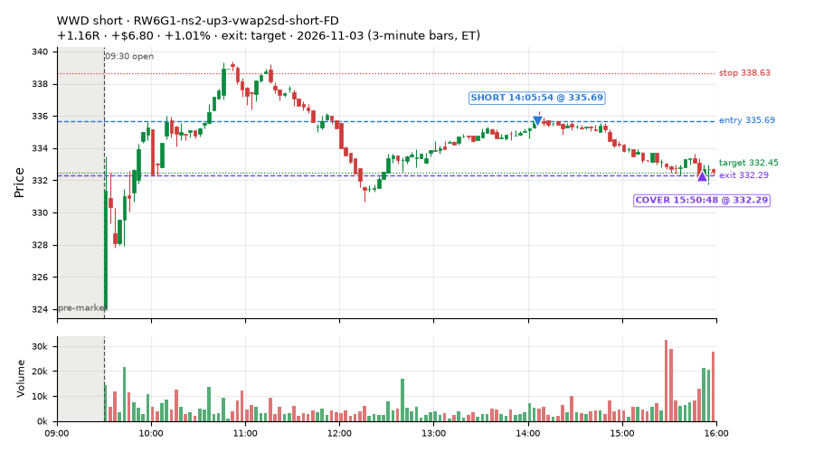
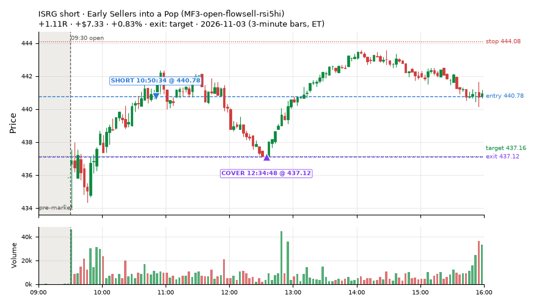
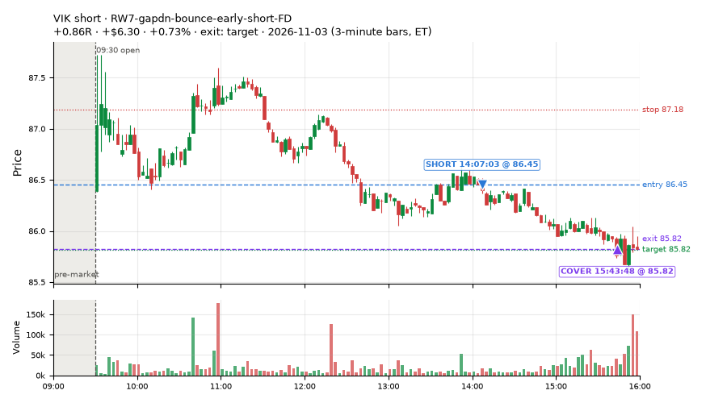
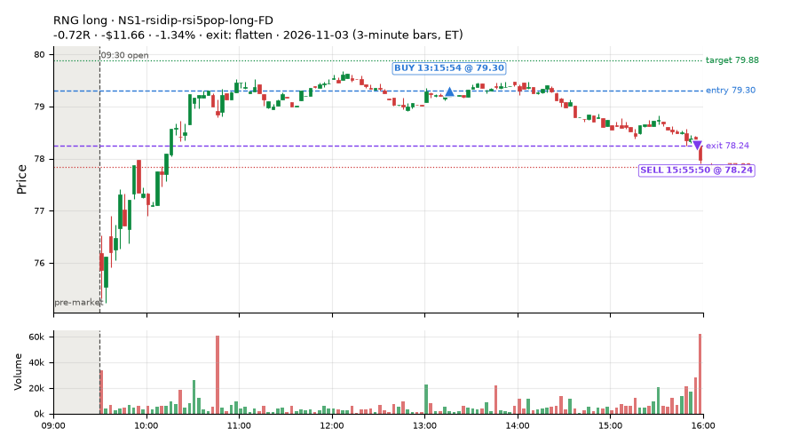
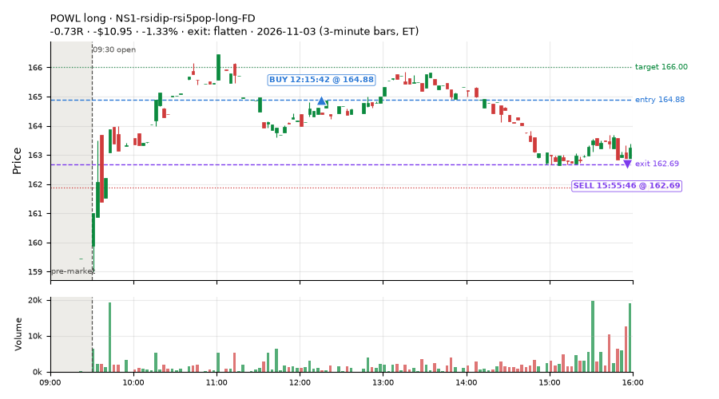
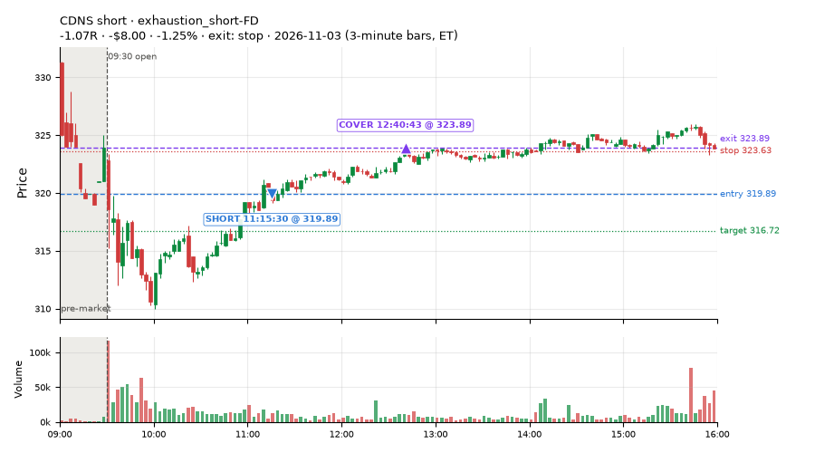
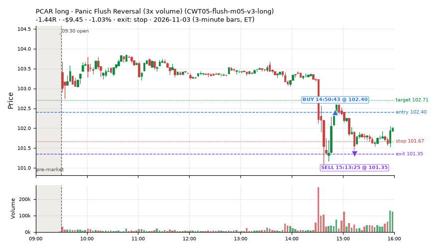
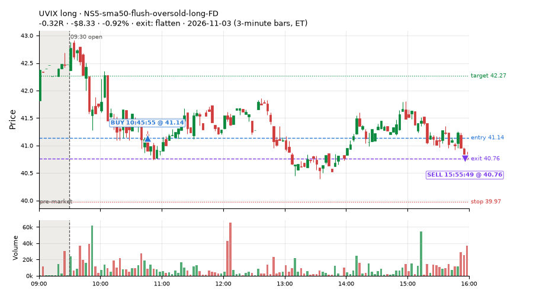

49 trades · win rate 57% · P/L $12.96
PROBATION: no live setup has passed both locked test periods. 10 owner-directed setups added 2026-10-08 (MarcoFlow top 5 + 5 new), untested live. RW6G1 (RW6 + VWAP band guard) added 2026-10-09, probation.

| Symbol | Setup | Side | In | Out | Entry | Exit | Exit reason | % gained | P/L |
|---|---|---|---|---|---|---|---|---|---|
| WWD | RW6G1-ns2-up3-vwap2sd-short-FD | short | 14:05 | 15:50 | 335.69 | 332.29 | target | +1.01% | $6.80 |
| ISRG | Early Sellers into a Pop (MF3-open-flowsell-rsi5hi) | short | 10:50 | 12:34 | 440.78 | 437.12 | target | +0.83% | $7.33 |
| VIK | RW7-gapdn-bounce-early-short-FD | short | 14:07 | 15:43 | 86.45 | 85.82 | target | +0.73% | $6.30 |
| Symbol | Setup | Side | In | Out | Entry | Exit | Exit reason | % lost | P/L |
|---|---|---|---|---|---|---|---|---|---|
| RNG | NS1-rsidip-rsi5pop-long-FD | long | 13:15 | 15:55 | 79.30 | 78.24 | flatten | -1.34% | $-11.66 |
| POWL | NS1-rsidip-rsi5pop-long-FD | long | 12:15 | 15:55 | 164.88 | 162.69 | flatten | -1.33% | $-10.95 |
| CDNS | exhaustion_short-FD | short | 11:15 | 12:40 | 319.89 | 323.89 | stop | -1.25% | $-8.00 |
| PCAR | CWT05-flush-m05-v3-long | long | 14:50 | 15:13 | 102.40 | 101.35 | stop | -1.03% | $-9.45 |
| UVIX | NS5-sma50-flush-oversold-long-FD | long | 10:45 | 15:55 | 41.14 | 40.76 | flatten | -0.92% | $-8.33 |








Signal to fill: median 2s, 90th percentile 3s (49 trades). Bars close each minute; the order follows the bar close.
Best excursion (MFE): median 0.68R; worst (MAE) median 0.48R. 18% of trades never got +0.25R in our favour; 0 reached +1R and still closed at or below 0.
| Symbol | Setup | Best R | Worst R | Closed R |
|---|---|---|---|---|
| ISRG | RW7-gapdn-bounce-early-short-FD | +0.73 | -1.01 | -1.01 |
| PCAR | CWT05-flush-m05-v3-long | +0.29 | -1.37 | -1.44 |
| IWB | MF3-open-flowsell-rsi5hi | +0.53 | -1.01 | -1.04 |
| IWB | MF5-flowsell-vwapup-rsi5hi | +0.50 | -1.01 | -1.04 |
| CDNS | exhaustion_short-FD | +0.21 | -1.05 | -1.07 |
| Entry time | Trades | Win | Avg R | P/L |
|---|---|---|---|---|
| 09:50-10:30 | 4 | 0% | -1.03 | $-17.26 |
| 10:30-11:30 | 23 | 65% | +0.43 | $33.52 |
| 11:30-13:00 | 7 | 57% | +0.06 | $-1.30 |
| 13:00-14:00 | 7 | 71% | +0.09 | $0.62 |
| 14:00-16:00 | 8 | 50% | -0.05 | $-2.62 |
| Setup | Trades | Win | Avg R | Adj R (net of SPY) | P/L |
|---|---|---|---|---|---|
| Panic Flush Reversal (3x volume) (CWT05-flush-m05-v3-long) | 1.0 | 0% | -1.44 | -1.34 | $-9.45 |
| Early Sellers into a Pop (MF3-open-flowsell-rsi5hi) owner-directed; holdouts once: Sep-Oct -0.059R n170, Apr-Jun -0.034R n729 | 9.0 | 67% | +0.38 | +0.38 | $17.45 |
| Sellers into Strength (all day) (MF5-flowsell-vwapup-rsi5hi) owner-directed; holdouts once: Sep-Oct -0.001R n264, Apr-Jun -0.010R n1199 | 6.0 | 67% | +0.23 | +0.13 | $5.11 |
| NS1-rsidip-rsi5pop-long-FD | 4.0 | 0% | -0.41 | -0.34 | $-26.54 |
| NS4-pm-vwap-reclaim-oversold-short-FD | 1.0 | 0% | -0.37 | -0.32 | $-2.55 |
| NS5-sma50-flush-oversold-long-FD | 2.0 | 0% | -0.24 | -0.21 | $-11.69 |
| Big Gainer Fade with VWAP Band Guard (RW6G1-ns2-up3-vwap2sd-short) owner-directed; two-year history +0.26R n424 t2.39 (required 4.76), positive up and down sessions; locked block not scored | 1.0 | 100% | +0.33 | +0.32 | $5.32 |
| RW6G1-ns2-up3-vwap2sd-short-FD | 2.0 | 100% | +0.84 | +0.56 | $12.45 |
| RW7-gapdn-bounce-early-short-FD | 17.0 | 71% | +0.32 | +0.11 | $33.83 |
| exhaustion_short-FD | 3.0 | 33% | -0.47 | -0.65 | $-9.05 |
| Index Last-Half-Hour Momentum (intraday_momentum) failed Apr-Jun holdout: -0.091R/trade over 147 trades | 3.0 | 67% | -0.17 | -0.23 | $-1.92 |
Market direction (SPY, beta 1) accounted for $23.01 of today's $12.96; the rest ($-10.05) came from the setups themselves. Avg R net of SPY: +0.03 (incl. a hedge leg's cost; report only).
28 setups live today. Today: 97 signals, 49 taken, 1 lost because another setup held the symbol (1%). Since 2026-10-09 (18 sessions): 8305 signals, 3451 taken, 745 lost to other setups (9%). Peak open positions today 33 of 400 slots. Earnings blackout removed 1842 symbols before scanning.
Simulated playing time (not live): 4522 what-if trades of signals not taken, avg -0.14R, 48% winners; of them 592 lost to another setup (avg +0.02R).
Silent: IDX1-qqq100-0955-TQQQ-trail, IDX1-qqq100-0955-TQQQ-hold, IDX2-spy075-0945-3x-trail, IDX3-spy075-0955-3x-trail, IDX5-spy050-0945-3x-trail · Crowded out: ST3-rsi5up-short-pm-t1s1-FD, MF3-open-flowsell-rsi5hi, RW4-ns3-adv150-short-FD, RW4-ns3-adv150-short, MF4-h40-open-flowsell-FD, NS3-failed-vwap-reclaim-short-FD · Starved: MF1-945-flowsell-vwapup, LIQ-pdl-sweep-open15-vwap-long, ST5-pdbrkup-short-mid-t05s1-FD, MF5-flowsell-vwapup-rsi5hi, exhaustion_short-FD, orb20_a, NS2-sma50break-overbought-short, MF1-945-flowsell-vwapup-FD
| Prio | Setup | Today sig / taken | Sessions | Signals / taken / trades | Taken/day | Expected/day | Lost to other setups | Lost to (setup n) | Top skip reasons | SIMULATED: not-taken n / avg R / win | Verdict |
|---|---|---|---|---|---|---|---|---|---|---|---|
| 1 | Early Sellers Above VWAP MF1-945-flowsell-vwapup | 3 / 0 | 8 | 24 / 5 / 5 | 0.62 | 5.33 | 0 | – | spread / quote / size 10, other 8, not shortable / shorts off 1 | 19 / +0.05R / 26% | starved 0.62 entries/day vs ~5.33 expected |
| 2 | Big Gainer Fade with VWAP Band Guard RW6G1-ns2-up3-vwap2sd-short | 1 / 1 | 10 | 1 / 1 / 1 | 0.10 | 0.40 | 0 | – | – | 0 / – | slow 0.5 entries/week; ~120 weeks to 60 trades |
| 3 | Index Dip Bounce 1 TQQQ IDX1-qqq100-0955-TQQQ-trail | 0 / 0 | 13 | 0 / 0 / 0 | 0.00 | – | 0 | – | – | 0 / – | silent no signals in 13 session(s); no expected rate on file |
| 4 | Index Dip Bounce 1 TQQQ (hold) IDX1-qqq100-0955-TQQQ-hold | 0 / 0 | 13 | 0 / 0 / 0 | 0.00 | – | 0 | – | – | 0 / – | silent no signals in 13 session(s); no expected rate on file |
| 5 | Index Dip Bounce 2 3x S&P IDX2-spy075-0945-3x-trail | 0 / 0 | 13 | 0 / 0 / 0 | 0.00 | – | 0 | – | – | 0 / – | silent no signals in 13 session(s); no expected rate on file |
| 6 | Index Dip Bounce 3 3x S&P IDX3-spy075-0955-3x-trail | 0 / 0 | 13 | 0 / 0 / 0 | 0.00 | – | 0 | – | – | 0 / – | silent no signals in 13 session(s); no expected rate on file |
| 7 | Index Dip Bounce 5 3x S&P IDX5-spy050-0945-3x-trail | 0 / 0 | 13 | 0 / 0 / 0 | 0.00 | – | 0 | – | – | 0 / – | silent no signals in 13 session(s); no expected rate on file |
| 8 | Prior-Day Low Sweep Reversal to VWAP LIQ-pdl-sweep-open15-vwap-long | 0 / 0 | 16 | 1 / 1 / 1 | 0.06 | 0.38 | 0 | – | – | 0 / – | starved 0.06 entries/day vs ~0.38 expected |
| 9 | ST5-pdbrkup-short-mid-t05s1-FD ST5-pdbrkup-short-mid-t05s1-FD | 0 / 0 | 17 | 19 / 2 / 2 | 0.12 | 0.78 | 0 | – | not shortable / shorts off 9, split-tape short gate 6, spread / quote / size 1 | 17 / -0.32R / 47% | starved 0.12 entries/day vs ~0.78 expected |
| 10 | ST8-volspikedn-long-pm-t1s1-FD ST8-volspikedn-long-pm-t1s1-FD | 0 / 0 | 17 | 12 / 10 / 10 | 0.59 | 1.05 | 1 | orb20_a 1 | symbol held by another setup 1, spread / quote / size 1 | 2 / -0.07R / 50% | slow 2.9 entries/week; ~20 weeks to 60 trades |
| 11 | RSI Collapse Dip Buy, Nasdaq-below-VWAP only (all day) ST7Q-rsi50dn-qqqbelowvwap-long-t1s1-FD | 0 / 0 | 8 | 3 / 3 / 3 | 0.38 | 1.25 | 0 | – | – | 0 / – | slow 1.9 entries/week; ~32 weeks to 60 trades |
| 12 | ST6-volspikeup-short-mid-t1s1-FD ST6-volspikeup-short-mid-t1s1-FD | 1 / 0 | 17 | 24 / 6 / 6 | 0.35 | 1.24 | 4 | RW4-ns3-adv150-short-FD 3, NS3-failed-vwap-reclaim-short 3, NS3-failed-vwap-reclaim-short-FD 1 | split-tape short gate 6, not shortable / shorts off 5, symbol held by another setup 4 | 16 / -0.18R / 38% | slow 1.8 entries/week; ~34 weeks to 60 trades |
| 13 | ST3-rsi5up-short-pm-t1s1-FD ST3-rsi5up-short-pm-t1s1-FD | 0 / 0 | 17 | 19 / 2 / 2 | 0.12 | 1.35 | 6 | ST2-slope20up-long-am-t05s1-FD 4, RW4-ns3-adv150-short-FD 2, NS3-failed-vwap-reclaim-short 2 | symbol held by another setup 6, not shortable / shorts off 4, split-tape short gate 4 | 12 / -0.11R / 33% | crowded-out 6 of 19 signals (32%) lost to setups already holding the symbol |
| 14 | ST4-emadn-long-am-t1s05-FD ST4-emadn-long-am-t1s05-FD | 1 / 0 | 17 | 29 / 15 / 15 | 0.88 | 2.77 | 6 | RW7-gapdn-bounce-early-short-FD 2, RW5-heat30-flowsell-rsi5pop-gapdn-short-FD 2, orb20_a 1 | symbol held by another setup 6, spread / quote / size 5, other 3 | 14 / -0.60R / 21% | slow 4.4 entries/week; ~14 weeks to 60 trades |
| 15 | NS4-pm-vwap-reclaim-oversold-short-FD NS4-pm-vwap-reclaim-oversold-short-FD | 2 / 1 | 17 | 58 / 27 / 27 | 1.59 | 3.57 | 4 | L3-gap-slope-fromopen-FD 3, NS1-rsidip-rsi5pop-long-FD 1 | not shortable / shorts off 13, spread / quote / size 10, symbol held by another setup 4 | 31 / +0.11R / 48% | slow 7.9 entries/week; ~8 weeks to 60 trades |
| 16 | RW6G1-ns2-up3-vwap2sd-short-FD RW6G1-ns2-up3-vwap2sd-short-FD | 4 / 2 | 17 | 44 / 30 / 30 | 1.76 | 3.73 | 3 | RW6G1-ns2-up3-vwap2sd-short-FD 1, RW6-ns2-up3-short-FD 1, NS2-sma50break-overbought-short-FD 1 | not shortable / shorts off 4, symbol held by another setup 3, split-tape short gate 3 | 14 / +0.20R / 64% | slow 8.8 entries/week; ~7 weeks to 60 trades |
| 17 | Panic Flush Reversal (3x volume) CWT05-flush-m05-v3-long | 1 / 1 | 10 | 36 / 25 / 25 | 2.50 | – | 0 | – | spread / quote / size 9, daily loss cap 1, other 1 | 11 / -0.23R / 55% | slow 12.5 entries/week; ~5 weeks to 60 trades |
| 18 | L3-gap-slope-lowdist-FD L3-gap-slope-lowdist-FD | 6 / 0 | 17 | 275 / 59 / 59 | 3.47 | 9.76 | 8 | RW6-ns2-up3-short-FD 3, NS2-sma50break-overbought-short-FD 3, L3-gap-slope-rsi5hi-FD 3 | not shortable / shorts off 114, daily loss cap 72, spread / quote / size 14 | 209 / -0.26R / 41% | ok 17.4 entries/week |
| 19 | NS1-rsidip-rsi5pop-long-FD NS1-rsidip-rsi5pop-long-FD | 7 / 4 | 17 | 65 / 45 / 45 | 2.65 | 5.39 | 5 | L3-gap-slope-fromopen-FD 5 | spread / quote / size 7, symbol held by another setup 5, daily loss cap 5 | 20 / -0.16R / 60% | slow 13.2 entries/week; ~5 weeks to 60 trades |
| 20 | NS5-sma50-flush-oversold-long-FD NS5-sma50-flush-oversold-long-FD | 2 / 2 | 17 | 58 / 36 / 36 | 2.12 | 6.32 | 13 | RW4-ns3-adv150-short-FD 10, NS3-failed-vwap-reclaim-short 10, NS3-failed-vwap-reclaim-short-FD 8 | symbol held by another setup 13, spread / quote / size 4, daily loss cap 2 | 12 / +0.25R / 67% | slow 10.6 entries/week; ~6 weeks to 60 trades |
| 21 | Sellers into Strength (all day) MF5-flowsell-vwapup-rsi5hi | 13 / 6 | 12 | 81 / 40 / 40 | 3.33 | 15.47 | 13 | MF5-flowsell-vwapup-rsi5hi-FD 10, MF3-open-flowsell-rsi5hi 2, CWT12-coil-k6-long 1 | symbol held by another setup 13, spread / quote / size 13, other 8 | 40 / +0.11R / 57% | starved 3.33 entries/day vs ~15.47 expected |
| 22 | Big Loser VWAP Reclaim Fade NS3-failed-vwap-reclaim-short | 1 / 0 | 15 | 83 / 46 / 46 | 3.07 | 3.03 | 5 | LIQ-orl-sweep-open15-s25-long 3, heat_fade_short 1, heat_fade_short-FD 1 | not shortable / shorts off 19, spread / quote / size 12, symbol held by another setup 5 | 29 / -0.04R / 45% | ok 15.3 entries/week |
| 23 | Early Sellers into a Pop MF3-open-flowsell-rsi5hi | 13 / 9 | 12 | 73 / 15 / 15 | 1.25 | 9.19 | 38 | MF3-open-flowsell-rsi5hi-FD 35, MF5-flowsell-vwapup-rsi5hi 13, MF5-flowsell-vwapup-rsi5hi-FD 7 | symbol held by another setup 38, spread / quote / size 11, other 5 | 58 / -0.31R / 38% | crowded-out 38 of 73 signals (52%) lost to setups already holding the symbol |
| 24 | RW7-gapdn-bounce-early-short-FD RW7-gapdn-bounce-early-short-FD | 35 / 17 | 17 | 635 / 348 / 348 | 20.47 | 59.92 | 37 | LIQ-orl-sweep-open15-s25-long 11, RW1-gapdn-bounce-flowsell-short-FD 9, MF2-open-rsimidhi-flowsell-FD 7 | daily loss cap 110, not shortable / shorts off 73, symbol held by another setup 37 | 284 / +0.24R / 65% | ok 102.4 entries/week |
| 25 | Afternoon Blow-off Short exhaustion_short | 0 / 0 | 17 | 110 / 55 / 55 | 3.24 | 12.12 | 6 | L3-gap-slope-fromopen-FD 3, RW2-exhaustion-noon-adv150-short-FD 2, L3-gap-slope-rsi5hi-FD 1 | not shortable / shorts off 28, split-tape short gate 15, symbol held by another setup 6 | 53 / -0.06R / 51% | ok 16.2 entries/week |
| 26 | exhaustion_short-FD exhaustion_short-FD | 3 / 3 | 17 | 212 / 81 / 81 | 4.76 | 64.64 | 25 | exhaustion_short 14, RW2-exhaustion-noon-adv150-short-FD 8, L3-gap-slope-fromopen-FD 5 | daily loss cap 53, not shortable / shorts off 37, symbol held by another setup 25 | 123 / -0.37R / 34% | starved 4.76 entries/day vs ~64.64 expected |
| 27 | Index Last-Half-Hour Momentum intraday_momentum | 3 / 3 | 17 | 35 / 34 / 34 | 2.00 | 2.37 | 0 | – | daily loss cap 1 | 1 / -0.26R / 0% | slow 10.0 entries/week; ~6 weeks to 60 trades |
| 28 | 20-Minute Opening Range Breakout orb20_a | 1 / 0 | 17 | 64 / 25 / 25 | 1.47 | 6.79 | 0 | – | trigger missed between polls 22, spread / quote / size 8, not shortable / shorts off 6 | 33 / +0.10R / 52% | starved 1.47 entries/day vs ~6.79 expected |
Every trade is attached as a CSV you can open and edit in Excel or Google Sheets. Live page: https://misiti15.github.io/MCF/live/